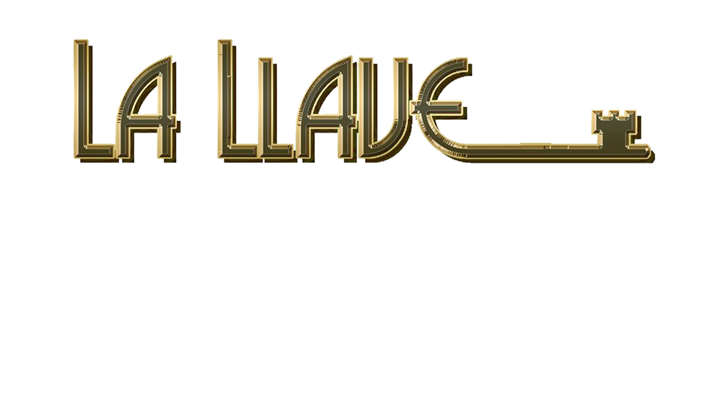

GRUPO

DE RUBEN TOLEDO
swap_vert
Deslice la barra
GRUPO LA LLAVE
Grupo LA LLAVE, creado a principios del año 2012 con la iniciativa de los maestros Rubén Toledo y Germán Villarreal quienes ocuparon el 1er puesto a nivel nacional en el concurso de percusión realizado por la Orquesta Filarmónica de Bogotá en el año 2008.
Hoy en día el grupo es liderado por RUBEN TOLEDO. La Llave ha sido seleccionado para cerrar ya en 8 ocasiones la feria de Manizales, ha cerrado feria de Cali y ha acompañado una infinidad de artistas internacionales, algunos de ellos: Orlando Marin, Jimmy Bosch, Ray Pérez, Chocolate Armenteros, Alfredo Linares, Chamaco Rivera, Tony Molina, Gerardo Rosales...Etc...Etc. El Grupo La Llave también ya cuenta con un trabajo discográfico.
En la llave vibra la música, la fe, la esperanza y sobre todo la lealtad con el público que siempre está presente apoyándonos.
Quien escucha LA LLAVE enseguida se imagina que los viejos y buenos tiempos de la música regresan, la época en que aquellos grupos Jazzeados tocaban la Salsa y el Latin jazz, y que le da esa gran coloratura rítmica a este grupo.
La Llave presenta dos formatos, uno conformado por 13 grandes maestros reconocidos a nivel nacional e internacional y genera un sonido contagioso para el bailador, otro como sexteto que incluye el vibráfono, instrumento que habia desaparecido de los generos latinos por muchos años y vuelve a la palestra.
EL GRUPO LA LLAVE dentro de su repertorio cuenta con temas de alto nivel interpretativo, temas de grandes maestros tales como: Tito Puente, Tito Rodríguez, Héctor Rivera, Machito y muchos más, al igual maneja paralelamente otro repertorio con temas más comerciales de artistas como: Che Feliciano, Son Boricua, Joe Cuba, New Swing Sextet, etc., etc.…